Video Forensic Self-Descriptions: Leveraging Temporally Distributed Forensic Microstructures for Zero-Shot Detection of AI-Generated Videos

Abstract
AI-generated videos are becoming increasingly realistic, yet most detection methods focus on spatial artifacts within individual frames and require synthetic training data from known generators, causing them to fail on unseen generators. We identify two previously unexplored temporally distributed forensic microstructures that reveal whether a video was AI-generated. These traces arise from how a video's visual field and motion evolve over time, capturing subtle deviations that generators introduce when approximating real-world temporal dynamics.
To expose them, we train two simple predictors on real videos only, modeling visual evolution (VE-FSD) and motion evolution (ME-FSD), and analyze their prediction residuals. We then fit 3D spatio-temporal autoregressive models to these residuals, producing compact descriptors called Video Forensic Self-Descriptions (VFSD). VFSDs of real videos naturally cluster together and separate from AI-generated ones, enabling zero-shot detection without synthetic training data and source attribution. Experiments across multiple datasets and 35 generators demonstrate VFSD achieves state-of-the-art performance on both tasks.
Key Contributions
1. Temporal Microstructures
Identifies a novel class of forensic evidence: temporally distributed microstructures that emerge from deviations in how visual appearance and motion dynamics evolve across successive frames, complementing spatial single-frame artifacts.
2. Real-Only Predictors
Trains decoupled linear convolutional predictors ($f_I, f_O$) solely on real video to learn genuine scene physics. Once trained, they remain permanently frozen, enabling generalizable zero-shot detection without ever seeing synthetic video.
3. 3D AR Self-Descriptions
Parameterizes spatial and cross-frame residual correlations into compact 3D autoregressive (AR) fingerprints. Each video describes its own microstructural dynamics, supporting both zero-shot outlier scoring and multi-class source attribution.
The Physical Intuition: Artificial Smoothness
Why are temporal prediction residuals so discriminative between real and AI-generated video?
Current video generators enforce temporal consistency using 3D convolutions and cross-frame attention mechanisms. Because these models struggle to replicate the complex, non-linear stochastic variations of real-world physics, they produce artificially smoothed, low-entropy motion trajectories.
A counterintuitive consequence is that our motion predictor $f_O$ achieves lower prediction error on synthetic videos than on real videos. As shown in the KDE plot, motion residuals of real videos exhibit substantially higher variance and energy, while AI-generated videos form tighter, artificially low-energy distributions.
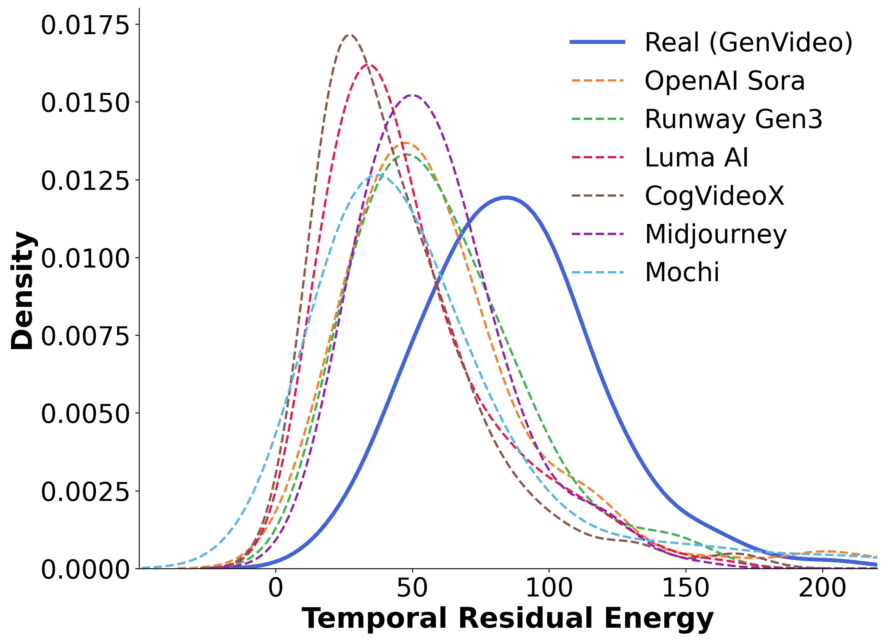
Figure 2: Motion residual energy distributions for real vs. AI-generated video generators.
Visualizing Forensic Microstructures
By computing the 2D FFT power spectrum of the fitted 3D autoregressive self-descriptions, distinct frequency response patterns emerge across real videos and different generative pipelines.
| Stream | Real MIT |
Gen Runway |
Gen Luma AI |
Gen CogVidX |
Gen Midjourney |
Gen Sora |
Gen Mochi |
|---|---|---|---|---|---|---|---|
| ME-FSD (Motion) |
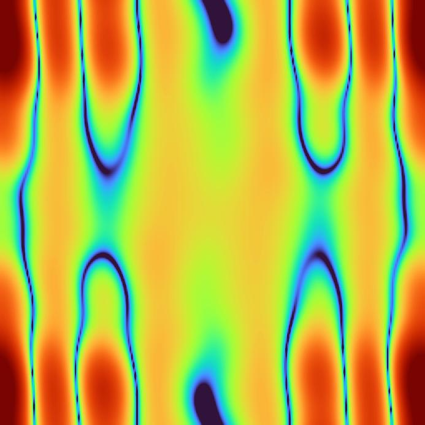 |
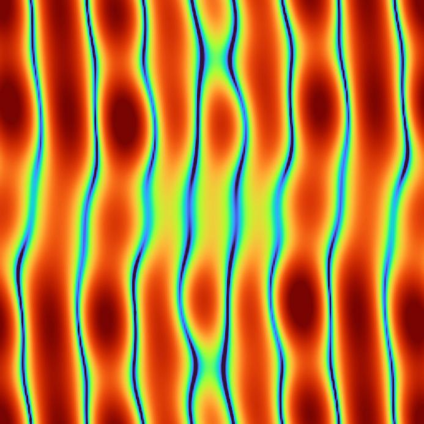 |
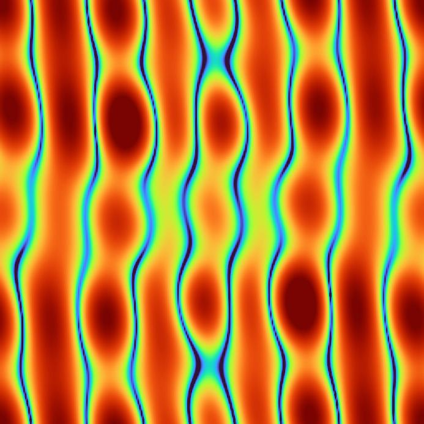 |
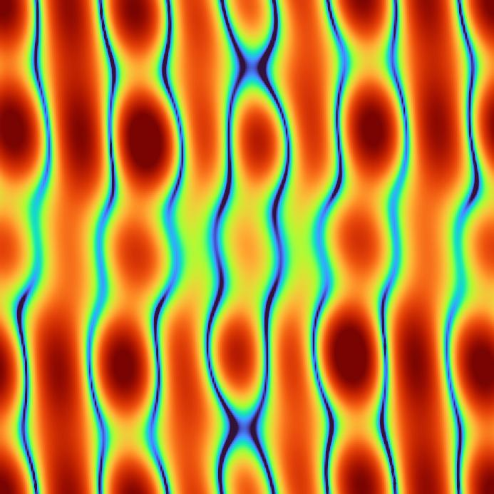 |
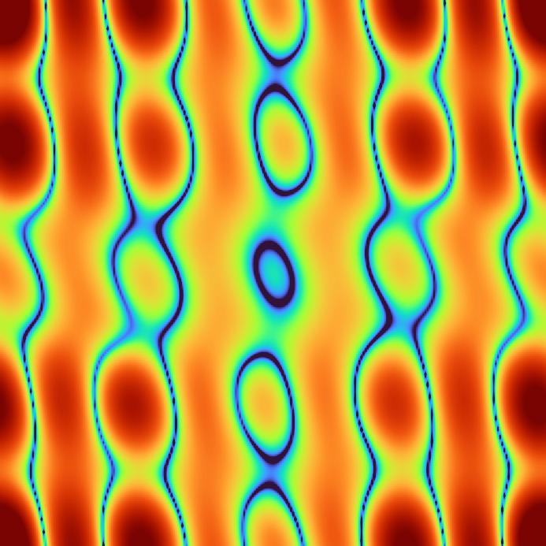 |
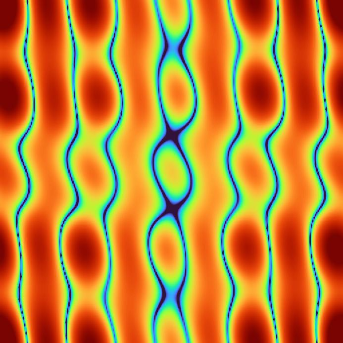 |
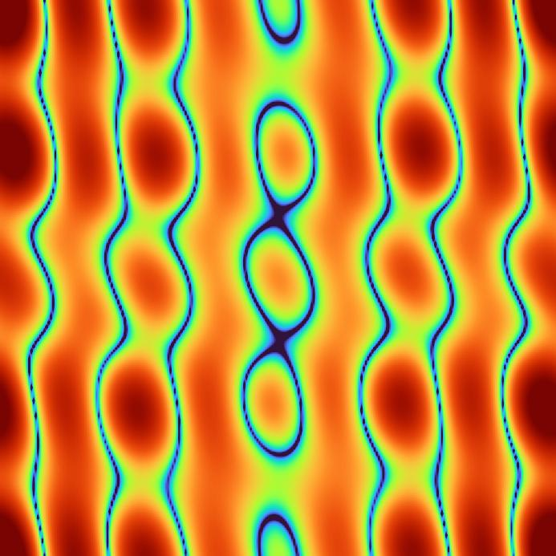 |
| VE-FSD (Visual) |
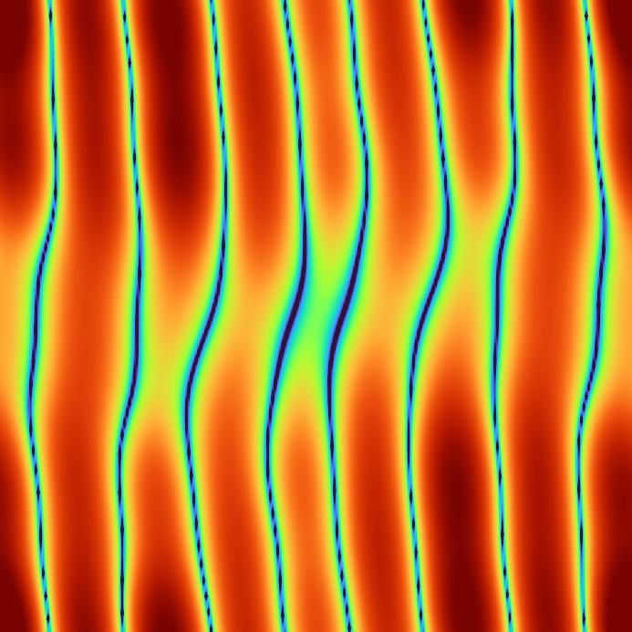 |
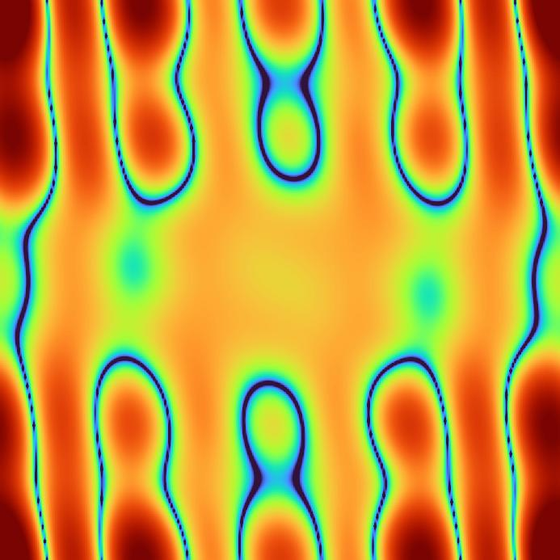 |
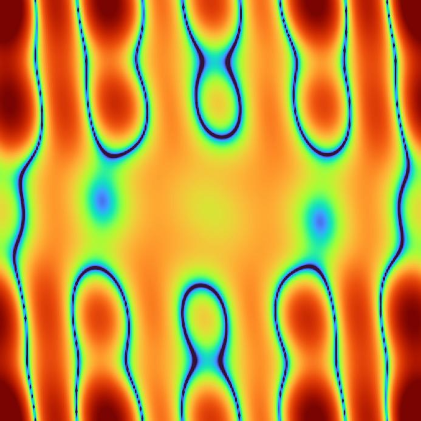 |
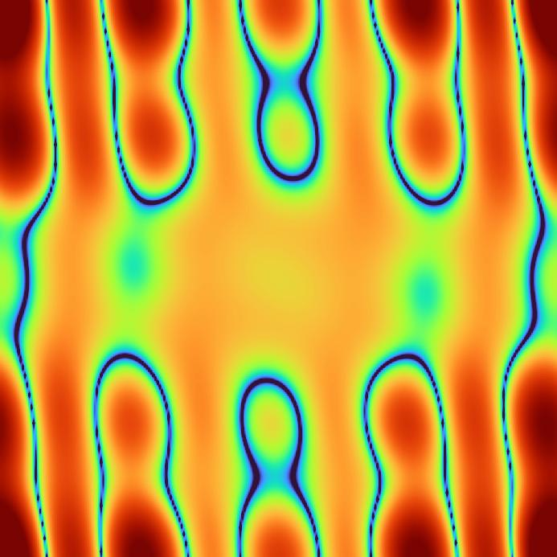 |
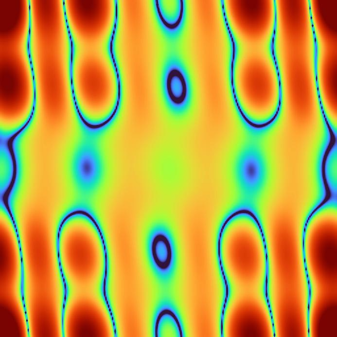 |
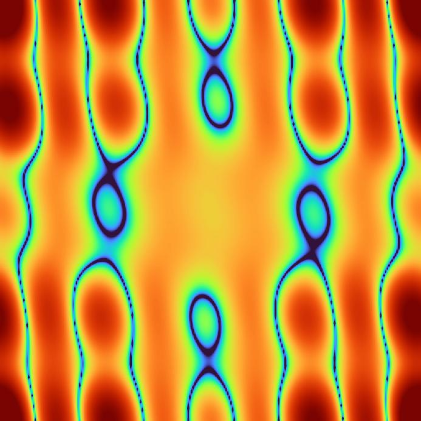 |
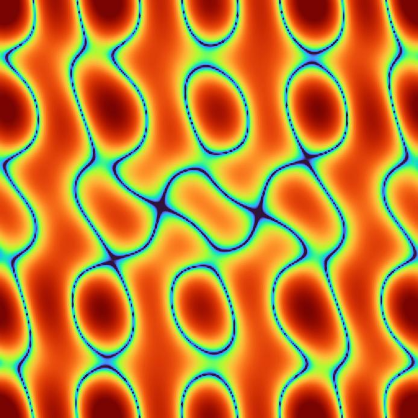 |
Figure 3: AR coefficient frequency response spectra. Real video residuals produce broad, smoothly varying low-frequency structures reflecting natural sensor noise and model mismatch. In stark contrast, each generative model introduces distinct, higher-frequency artifacts and directional ringing that act as identifiable architectural fingerprints.
Experimental Benchmarks
1. Zero-Shot AI Video Detection
We evaluate 105 real-vs-synthetic test combinations spanning 35 generative video models across three real benchmarks (Moments-in-Time, Video-ACID, and GenVideo). Competing methods utilize officially released pre-trained weights, whereas VFSD operates strictly zero-shot without observing any synthetic video during training.
| Method | Type | GenVideo (AUC) | Video-ACID (AUC) | MIT (AUC) | Average (AUC) |
|---|---|---|---|---|---|
| NPR (CVPR 2023) | Image-Based | 0.839 | 0.548 | 0.730 | 0.706 |
| RINE (CVPR 2024) | Image-Based | 0.744 | 0.825 | 0.879 | 0.816 |
| FSD (CVPR 2025) | Image-Based | 0.999 | 0.755 | 0.737 | 0.830 |
| DeMamba (ECCV 2024) | Video-Based | 0.451 | 0.568 | 0.534 | 0.527 |
| D3 (ICLR 2025) | Video-Based | 0.928 | 0.844 | 0.688 | 0.820 |
| AIGVDet (ACM MM 2024) | Video-Based | 0.875 | 0.777 | 0.805 | 0.819 |
| Vahdati et al. (WACV 2025) | Video-Based | 0.868 | 0.770 | 0.827 | 0.822 |
| ME-FSD (Ours) | Temporal Motion | 0.998 | 0.932 | 0.750 | 0.893 |
| VE-FSD (Ours) | Temporal Visual | 1.000 | 0.930 | 0.831 | 0.920 |
| VFSD (Ours Combined) | Dual Stream | 1.000 | 0.957 | 0.791 | 0.916 |
2. Source Generator Attribution & t-SNE Clustering
Beyond binary detection, we test whether self-descriptions capture generator-specific fingerprints. While general vision models (CLIP, DINOv2) and spatial detectors (NPR, FSD) suffer heavy source entanglement under KNN classification, VFSD achieves 0.959 accuracy with linear SVM and 0.851 with KNN across 7 diverse sources, proving that temporal microstructures are inherently source-discriminative.
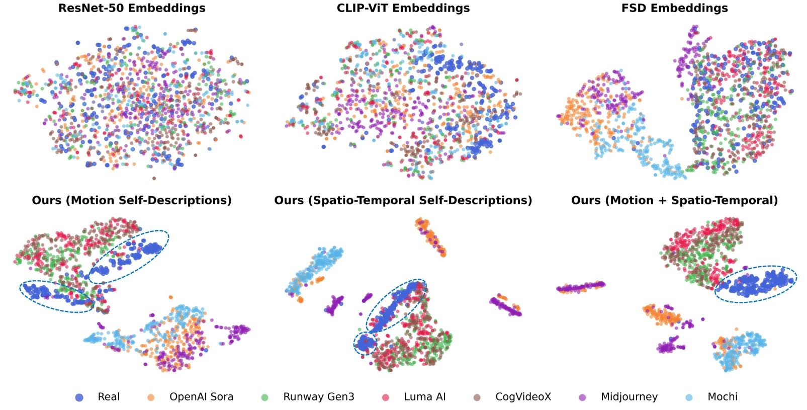
Figure 4: 2D t-SNE projections comparing baseline representations vs. VFSD. VFSD cleanly maps each generative source into distinct, well-separated clusters while cleanly isolating real videos.
| Embedding | KNN Acc. | SVM Acc. |
|---|---|---|
| ResNet-50 | 0.490 | 0.630 |
| CLIP-ViT | 0.650 | 0.810 |
| DINOv2 | 0.540 | 0.630 |
| NPR | 0.390 | 0.830 |
| D3 | 0.650 | 0.820 |
| FSD | 0.610 | 0.770 |
| VFSD (Ours) | 0.851 | 0.959 |
Notice how KNN accuracy for baselines collapses (e.g. NPR drops from 0.830 to 0.390), indicating their features are not naturally clustered, whereas VFSD retains high accuracy (0.851) even with non-parametric nearest neighbors.
BibTeX
@inproceedings{azizpour2026video,
title={Video Forensic Self-Descriptions: Leveraging Temporally Distributed Forensic Microstructures for Zero-Shot Detection of AI-Generated Videos},
author={Azizpour, Aref and Nguyen, Tai D. and Stamm, Matthew C.},
booktitle={Advances in Neural Information Processing Systems (NeurIPS)},
year={2026}
}